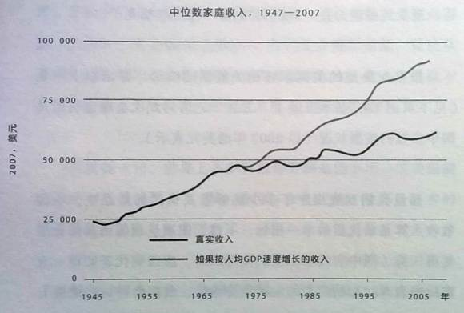

【经济】【美国】大停滞的真原因
2015-05-24 18:53:00
原文网址：https://blog.udn.com/MengyuanWang/108908737
四年前一个名叫Tyler Cowen的美国经济学教授写了一本书，叫做《The Great Stagnation》（《大停滞》），试图解释美国经济自1970年代初期开始的明显停滞现象。他的理论是在1960年代，大部分能改善人民生活的科技都已经普遍化了；从1970年代开始，科技的进展大幅减缓，以致美国人的生活水准不能再以同样的速度提升。他举的例子主要是一般美国家庭的房子和车，其主要功能如电力供应、空调、吸尘器、洗衣机、烘乾机、洗碗机、烤箱等等在1960年代就已广泛应用，50年来新加的只有电脑和网络。因为一般人的生活用品与祖父母那代基本相同，所以当然生活水准就不可能有快速的提升。
这很明显地违反了一般人的常识，亦即科技的进展随着全球经济的发展与整合而越来越快。那么他的理论是否完全是胡说八道呢？让我们回想一下我在前文《高能物理的绝唱》里提到的集高能物理大成的标准模型，它的确是在1973年发展完成；此后40多年，高能物理的理论不但没有进展，反而退化成为超弦这様的偽科学。科技是科学的实用化，而高能物理是科学的尖端，既然尖端开始倒退，科技就不再像自文艺復兴以来的过去400多年那样不断有上游的新理论来提供新的可能。18世纪对电的研究允许了19世纪末的电报、电灯和电话的发明。19世纪的电磁理论为无线通讯奠定了基础。Boltzmann的热力学不但给世界带来了各式发动机、汽车和飞机，也使冷气和电冰箱成为家常装备。X光的发现带来了医用X光。20世纪初的量子力学直接导致电子工业的兴起。连1930年代才发现的Meon（μ子）后来都有了医学上的应用。我们可以看出新科学的确为新技术打开新路，而且从科学发现到实用化所需的时间越来越短。
不过自从1940年代开始，高能物理步入了量子场论这个阶段，所有的新发现基本与经济民生完全脱节。这是因为量子场论是专门解释不稳定粒子的理论，而不稳定粒子是不能用来建造机器的。所以高能物理并不是在1970年才失去对实体经济的帮助，而是在1936年发现μ子之后就已成为纯科学。也就是说，高能物理理论实际上对人类生存只有1880年代到1930年代50年的贡献。其实这是一个很普遍的现象：古典热力学只用了不到20年就开发完成，相对论则由一个人花了11年就建立了。的确一旦Low-hanging Fruits（易摘的水果）被採下了，理论的进展就基本停滞，在这方面Cowen教授说对了。他错的地方在于理论的停滞并不代表应用也停滞了，例如热力学已是100多年的老理论，但是喷射引擎却在1940年代才实用化，至今仍以每20年推力重量比增加40%的步骤改进中。又如1920年的量子力学奠定了现代电子科技的基础，但是到1960年代才有积体电路（Integrated Circuit，大陆译为集成电路）出品，其后50年至今仍遵守Moore's Law。
然而，这些科技的进步虽然会比科学理论延迟一些时间，而且改进的步调可以延续更久，但是终究仍会停滞下来，例如现代的烤麵包机和1940年的產品相比只有外表上的差异，那么美国真的在1970年代遭遇了工业產品进化的普遍性停滞吗？Cowen教授给了不少例子，但是正因为工业產品进化停滞是普通而正常，找到一些例子并不代表那个时段有什么特别。实际上一类產品停滞的同时，另外几类新產品却进入进步的高峰期。在1970年代，旧的机械工业成熟了，新的电子工业却开始突飞猛进；旧光学没有进展，雷射却刚被发明不久；物理理论停滞了，生物医学却才刚因DNA的发现而准备转入高檔；消费性產品类别大致固定了，但是服务业的效率却因电脑化和网络化而继续大幅提升。我们若是仔细读《大停滞》，就会发现作者除了那些工业產品进化停滞的传闻证据（Anecdotal Evidence）之外，所列举的事实都是中位（Median）生活水准忽然在1970年代开始停滞不前，例如下面这张图。

这是一张《大停滞》中文版的图表；灰线是平均收入（Average Income），黑线是中位收入（Median Income）。从灰线我们可以看出美国家庭平均收入在1970年代前后的增率是相同的，从1970年代开始而停滞的只是中位收入的增长。也就是说，美国经济并没有在1970年代发生停滞，问题是出在收入分配上。新增的财富被富豪囊括去了，使大部分百姓的生活水准停滞不前。这和我在前文《富豪口袋里的国家》里提供的资料是完全吻合一致的。 这是另一张来自《大停滞》中文版的图表；可见财阀在1970年代的反扑的确是立竿见影，很快地就让中產阶级的教育机会也停止改进。所有可靠的统计资料都显示美国1%的最富人口掠夺了超过90%以上的近年GDP增长的成果，那么中產阶级不但收入成长停滞，在总人口中的百分比也开始下降，贫民人口大幅增加，就不足为奇了。
这是另一张来自《大停滞》中文版的图表；可见财阀在1970年代的反扑的确是立竿见影，很快地就让中產阶级的教育机会也停止改进。所有可靠的统计资料都显示美国1%的最富人口掠夺了超过90%以上的近年GDP增长的成果，那么中產阶级不但收入成长停滞，在总人口中的百分比也开始下降，贫民人口大幅增加，就不足为奇了。
所以总体来说，这个Tyler Cowen教授是Barking Up The Wrong Tree（找错了树来狂吠）。当然他的错误理论有利于财阀们对民眾洗脑，在学术界造成很基本的不确定性，避免了人民团结起来争取权益的可能，所以他自然被主要媒体狂捧，成为新一代经济学的明星之一。他自己知道他的名利双收是因为做了财阀的走狗帮凶吗？从目前的迹象来看，他并不是有意而为，而只是一个幸运的蠢蛋；不幸的是，他的幸运是建筑在99%的民眾的痛苦上的。指鹿为马、蠢人当道，这就是今日美式经济学的写照。